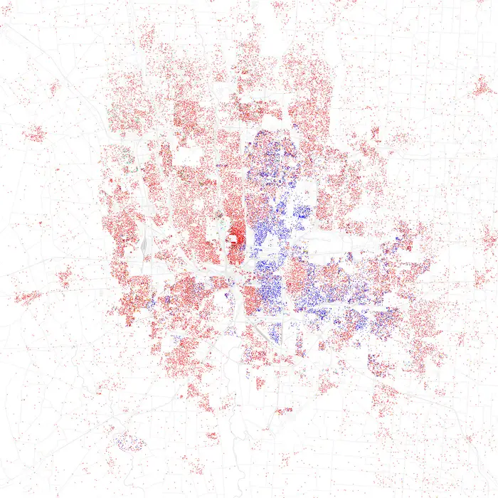
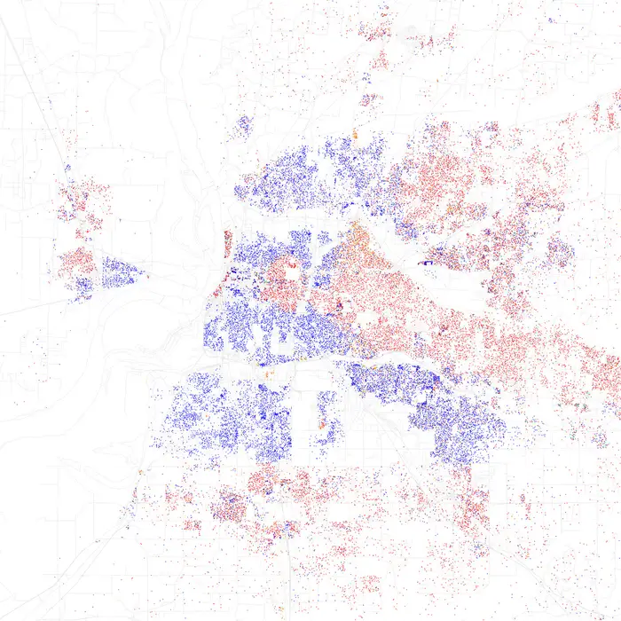
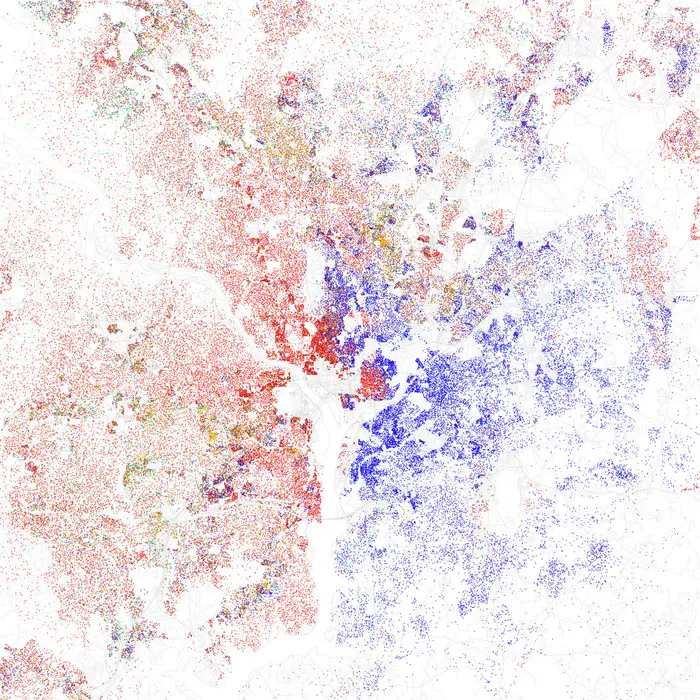
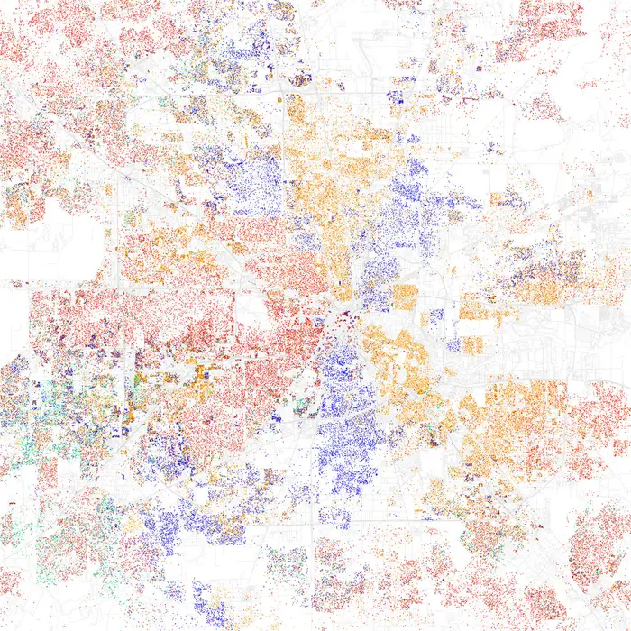
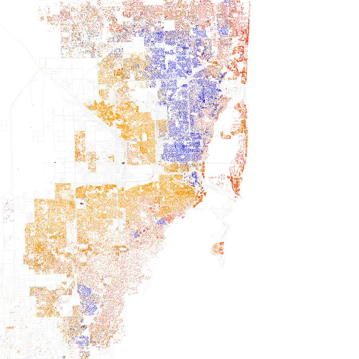
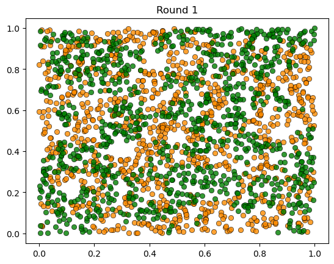
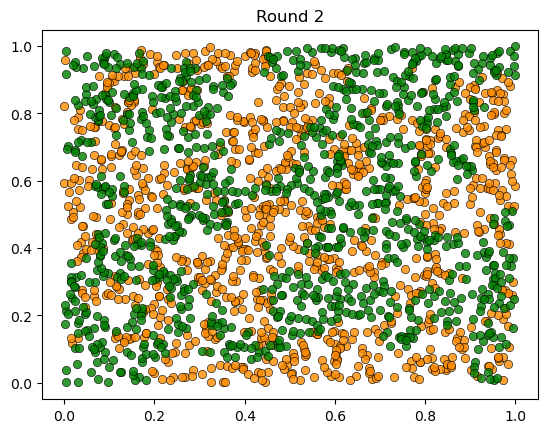
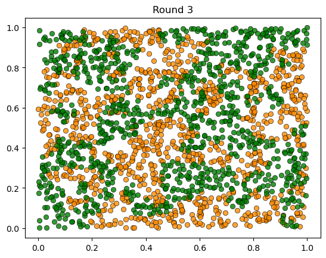
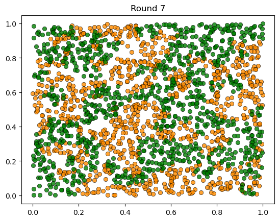

25. Schelling’s Model of Racial Segregation#
25.1. Outline#
Racial residential segregation has significant consequences across many dimensions of life in the US and other countries.
In 1969, Thomas C. Schelling developed a simple but striking model of racial segregation (Schelling, 1969).
His model studies the dynamics of racially mixed neighborhoods.
Like much of Schelling’s work, the model shows how local interactions can lead to surprising aggregate outcomes.
It studies a setting where agents (think of households) have relatively mild preference for neighbors of the same race.
For example, these agents might be comfortable with a mixed race neighborhood but uncomfortable when they feel “surrounded” by people from a different race.
Schelling illustrated the following surprising result: in such a setting, mixed race neighborhoods are likely to be unstable, tending to collapse over time.
In fact the model predicts strongly divided neighborhoods, with high levels of segregation.
In other words, extreme segregation outcomes arise even though people’s preferences are not particularly extreme.
These extreme outcomes happen because of interactions between agents in the model (e.g., households in a city) that drive self-reinforcing dynamics in the model.
In recognition of his work on segregation and other research, Schelling was awarded the 2005 Nobel Prize in Economic Sciences.
In this and the following lectures, we study Schelling’s model using simulation.
We will start in this lecture with a relatively elementary version written in pure Python.
Once that simple version is in place, we will consider efficiency.
We will develop progressively more efficient versions of the model, allowing us to study dynamics with larger populations and more interesting features.
In the most efficient versions, JAX and parallelization will play a central role.
Let’s start with some imports:
import matplotlib.pyplot as plt
from random import uniform, seed
from math import sqrt
import time
Matplotlib is building the font cache; this may take a moment.
25.2. Background#
Before jumping into the modelling process, let’s look at some data
The maps below are from the Weldon Cooper Center for Public Service at the University of Virginia.
They illustrate the racial composition of several major US cities, based on census data.
Each dot represents a group of residents — we omit details on which color represents which group.
These maps reveal patterns of spatial separation between racial groups.
25.2.1. Columbus, Ohio#
{kind=link}

Fig. 25.1 Racial distribution in Columbus, Ohio.#
25.2.2. Memphis, Tennessee#
{kind=link}

Fig. 25.2 Racial distribution in Memphis, Tennessee.#
25.2.3. Washington, D.C.#
{kind=link}

Fig. 25.3 Racial distribution in Washington, D.C.#
25.2.4. Houston, Texas#
{kind=link}

Fig. 25.4 Racial distribution in Houston, Texas.#
25.2.5. Miami, Florida#
{kind=link}

Fig. 25.5 Racial distribution in Miami, Florida.#
Looking at these maps, one might assume that segregation persists because of strong preferences—that people simply want to live only with others of their own race.
But is this actually the case?
Let’s now look at Schelling’s segregation model, which demonstrates a surprising result: extreme segregation can emerge even when individuals have only mild preferences for same-race neighbors.
This insight has profound implications for understanding how segregation persists and what policies might effectively address it.
25.3. The model#
25.3.1. Set-Up#
We will cover a variation of Schelling’s model that is different from the original but also easy to program and, at the same time, captures his main idea.
For now our coding objective is clarity rather than efficiency.
Suppose we have two types of people: orange people and green people.
Assume there are \(n\) of each type.
These agents all live on a single unit square.
Thus, the location (e.g, address) of an agent is just a point \((x, y)\), where \(0 < x, y < 1\).
The set of all points \((x,y)\) satisfying \(0 < x, y < 1\) is called the unit square
Below we denote the unit square by \(S\)
25.3.2. Preferences#
We will say that an agent is
happy if \(k \leq 6\) of her 10 nearest neighbors are of a different type.
unhappy if \(k > 6\) of her 10 nearest neighbors are of a different type.
For example,
if an agent is orange and 6 of her 10 nearest neighbors are green, then she is happy.
if an agent is orange and 7 of her 10 nearest neighbors are green, then she is unhappy.
‘Nearest’ is in terms of Euclidean distance.
An important point to note is that agents are not averse to living in mixed areas.
They are perfectly happy if 60% of their neighbors are of the other color.
Let’s set up the parameters for our simulation:
seed(1234) # set seed for reproducibility
num_of_type_0 = 1000 # number of agents of type 0 (orange)
num_of_type_1 = 1000 # number of agents of type 1 (green)
num_neighbors = 10 # number of agents viewed as neighbors
max_other_type = 6 # max number of different-type neighbors tolerated
25.3.3. Behavior#
Initially, agents are mixed together (integrated).
In particular, we assume that the initial location of each agent is an independent draw from a bivariate uniform distribution on the unit square \(S\).
Their \(x\) coordinate is drawn from a uniform distribution on \((0,1)\)
Their \(y\) coordinate is drawn independently from the same distribution.
Now, cycling through the set of all agents, each agent is now given the chance to stay or move.
Each agent stays if they are happy and moves if they are unhappy.
The algorithm for moving is as follows
Algorithm 25.1 (Relocation Algorithm)
Draw a random location in \(S\)
If happy at new location, move there
Else go to step 1
We cycle continuously through the agents, each time allowing an unhappy agent to move.
We continue to cycle until no one wishes to move.
25.4. Main Loop#
Let’s write the code to run this simulation.
In what follows, agents are modeled as objects that store
* type (green or orange)
* location
Here’s a class that we can use to instantiate agents from:
class Agent:
def __init__(self, type):
self.type = type
self.location = uniform(0, 1), uniform(0, 1)
Here’s a collection of functions that act on agents:
def get_distance(agent, other_agent):
"Computes the Euclidean distance between self and other agent."
a = agent.location[0] - other_agent.location[0]
b = agent.location[1] - other_agent.location[1]
return sqrt(a**2 + b**2)
def is_happy(agent, all_agents):
"""
True if agent has at most max_other_type different-type agents
among its num_neighbors nearest neighbors.
"""
# Collect all other agents, sorted by distance to agent
others = [a for a in all_agents if a != agent]
others.sort(key=lambda a: get_distance(agent, a))
# Check the nearest neighbors
neighbors = others[:num_neighbors]
num_other_type = sum(neighbor.type != agent.type for neighbor in neighbors)
return num_other_type <= max_other_type
def move_agent(agent, all_agents, max_attempts=10_000):
"If not happy, then randomly choose new locations until happy."
attempts = 0
while not is_happy(agent, all_agents):
agent.location = uniform(0, 1), uniform(0, 1)
attempts += 1
if attempts >= max_attempts:
break
Here’s some code that takes a list of agents and produces a plot showing their locations on the unit square.
Orange agents are represented by orange dots and green ones are represented by green dots.
The main loop cycles through all agents until no one wishes to move.
Algorithm 25.2 (Main Simulation Loop)
Input: Set of agents with initial random locations
Output: Final distribution of agents
Set
count\(\leftarrow\) 1While
count<max_iter:Set
number_of_moves\(\leftarrow\) 0For each agent:
If agent is unhappy, relocate using Algorithm 25.1 and increment
number_of_moves
Plot distribution
Increment
countIf
number_of_moves= 0, exit loop
The code is below
def run_simulation(all_agents, max_iter=100_000):
# Initialize a counter
count = 1
# Loop until no agent wishes to move
start_time = time.time()
while count < max_iter:
number_of_moves = 0
for agent in all_agents:
if not is_happy(agent, all_agents):
move_agent(agent, all_agents)
number_of_moves += 1
# Plot the distribution after this round
plot_distribution(all_agents, count)
# Print outcome and stop loop if no one moved
print(f'Completed loop {count} with {number_of_moves} moves')
count += 1
if number_of_moves == 0:
break
elapsed = time.time() - start_time
if count < max_iter:
print(f'Converged in {elapsed:.2f} seconds after {count} iterations.')
else:
print('Hit iteration bound and terminated.')
25.5. Results#
We are now ready to run our simulation.
First we build a population of agents:
all_agents = []
for i in range(num_of_type_0):
all_agents.append(Agent(0))
for i in range(num_of_type_1):
all_agents.append(Agent(1))
plot_distribution(all_agents, 0)
{kind=link}
Now we run the simulation and look at the results.
run_simulation(all_agents)
{kind=link}

Completed loop 1 with 404 moves
Completed loop 2 with 193 moves
Completed loop 3 with 66 moves
Completed loop 4 with 9 moves
Completed loop 5 with 4 moves
Completed loop 6 with 1 moves
Completed loop 7 with 0 moves
Converged in 16.78 seconds after 8 iterations.
{kind=link}

{kind=link}

{kind=link}
{kind=link}
{kind=link}
{kind=link}

As discussed above, agents are initially mixed randomly together.
But after several cycles, they become segregated into distinct regions.
In this instance, the program terminated after a small number of cycles through the set of agents, indicating that all agents had reached a state of happiness.
We notice that the fully mixed environment rapidly breaks down.
We get emergence of at least some segregation.
This is despite the fact that people in the model don’t actually mind living mixed with the other type.
Even with these preferences, the outcome is some degree of segregation.
(Not a lot of segregation, but we’ll see more segregation in later lectures, after some modifications.)
25.6. Performance#
Our Python code was written for readability, not speed.
This is fine for very small simulations but not for bigger ones.
That’s a problem for us because we want to experiment with some more ideas.
In the following lectures we’ll look at strategies for making our code faster.
Then we’ll investigate variations that might lead to even more segregation.